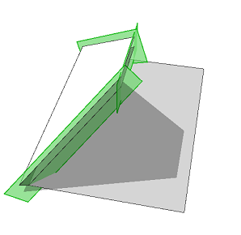
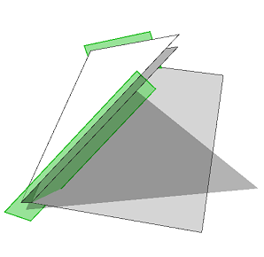

trim operation
Syntax
trim()
Description
This operation applies the current shape's trim planes to the geometry of the current shape.
Trim planes are generated by a component split and can be enabled and disabled by the trim attribute.
Trimming is automatically performed when a primitive or an asset is inserted in the scope.
Use the geometry.isInstanced function to check if an inserted asset was trimmed.
Related
Examples
Manual Trimming
 |
Roof-->
roofHip(45)
comp(f) { 1 : Face }
Face-->
s('2,'2,0.5)
center(x)
extrude(0.5)
set(trim.horizontal, true)
trim()
A roof face is extruded and trimmed by both vertical and horizontal trim planes. The trim planes are generated by the component split. Setting trim.horizontal to true activates horizontal trimming. |
Automatic Trimming
 |
Face-->
s('2,'2,0.5)
center(x)
primitiveCube()
A cube is inserted in the scope of a roof face. The insert and primitive operations automatically trim the geometry. Horizontal trim planes are not enabled by default. |
Copyright ©2008-2023 Esri R&D Center Zurich. All rights reserved.